Настройка материала в CRYENGINE
Достигнув этого момента, вы должны были успешно экспортировать геометрию и материал из 3dsMax или Maya в нужную папку. Теперь мы продолжим настройку в CRYENGINE. В этом разделе мы сначала определим параметры материала, необходимые для визуализации растительности и для ее правильного поведения. Затем мы воспользуемся инструментом растительности, чтобы разместить активы в мире.
Сначала откройте Material Editor и перейдите к своему объекту.
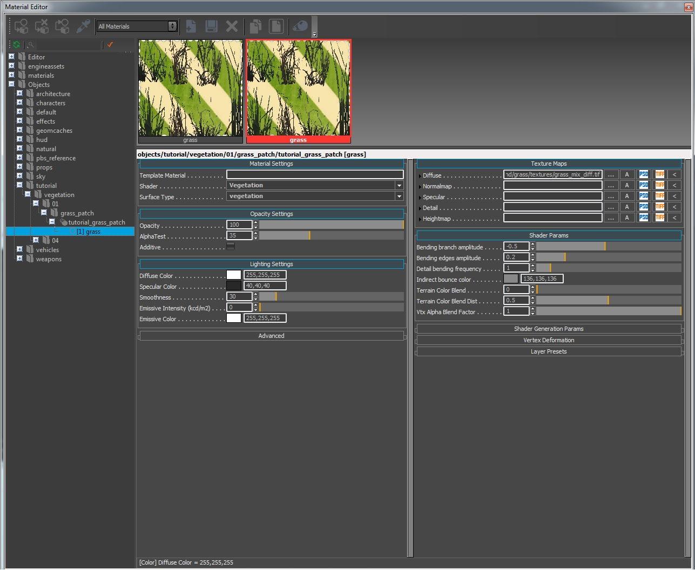
Рис1: обзор Material Editor
Установите правильный Шейдер и Тип поверхности для объекта и установите для обоих значение Растительность.
Настройки материала
Вам необходимо установить правильный Шейдер и Тип поверхности для объекта, и в этом случае оба должны быть изменены на Растительность. Это достигается выбором Растительность из раскрывающихся списков.

Рис2: Настройки материала
Когда мы используем Шейдер растительности в материале SubID он предоставляет определенные параметры, которые применимы только к системе растительности. Обратите внимание, как Material Editor обновляет два раздела для Параметры шейдера и Параметры генерации шейдеров когда мы переключаемся со стандартного шейдера освещения на шейдер растительности. Для получения дополнительной информации перейдите в раздел «Параметры генерации шейдеров» далее в этой статье.
Настройки непрозрачности
Здесь мы используем значения по умолчанию, которые мы установили в 3dsMax. Непрозрачность на 100% и AlphaTest установлено около 35. Не существует жестких правил для установки уровня альфа-тестирования. Установите то, что подходит для вашего актива.
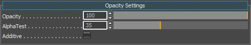
Рис3: Непрозрачность
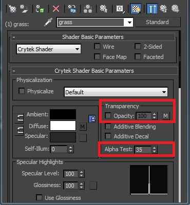
Рис. 4. Краткое описание того, откуда взялась эта информация в 3dsMax.
Освещение
Под Настройки освещения находим параметры цвета. Чтобы правильно соответствовать конвейеру PBS, нам необходимо:
- Установите наш Диффузный цвет до чисто белого 255 255 255.
- Установите Зеркальный цвет в диапазоне 40,40,40 – 60,60,60 (темно-серый).
- Установите Гладкость ползунок на низкое значение, например 30.
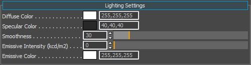
Рис5: Настройки освещения
Поскольку мы используем трава параметр в шейдере, это означает, что материал не требует карты нормалей. В CRYENGINE мы сохраняем значение сглаживания в альфа-канал карты нормалей (ddna), и, поскольку его нет в материале, значение сглаживания считывается непосредственно из Гладкость вместо этого слайдер.
Карты текстур
Карты текстур раздел уже должен был быть заполнен нашими Диффузный (*.diff) детали посредством экспорта материала из 3dsMax.
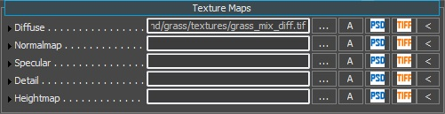
Рис.6: Карты текстур с назначенным только диффузным эффектом.
Параметры генерации шейдеров
На этой вкладке в Material Editor будут показаны различные параметры в зависимости от типа шейдера, который вы назначили материалу SubId. Поскольку мы выбрали Растительность шейдер, он предоставляет параметры, применимые к растительности. Чтобы продолжить, установите флажок Трава параметр. Мы хотим, чтобы наш актив проходил по более дешевому и быстрому трубопроводу.
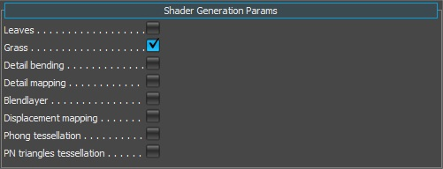
Рис.7: Параметры генерации шейдеров с включенной травой.
Имя | Описание |
|---|---|
| Листья | Использует более качественный проход рендеринга для актива. |
| Трава | Использует более дешевый и быстрый метод рендеринга актива. |
| Гибка деталей | Используется для добавления случайного шума к движению листьев (не требуется для этого урока). |
| Подробное картографирование | Используется для добавления подробной карты в актив (не требуется для этого руководства). |
| Смешать слой | Используется для смешивания второго набора текстур Diffuse и Normalmap (не требуется для этого урока). |
| Картирование смещения | Это необходимо для применения тесселяции к ресурсу (не требуется для этого руководства). |
| Мозаика Фонга | Это необходимо для применения тесселяции к ресурсу (не требуется для этого руководства). |
| PN мозаика треугольников | Это необходимо для применения тесселяции к ресурсу (не требуется для этого руководства). |
Параметры шейдера
Как вы, возможно, заметили, мы пропустили этот раздел в пользу Параметры генерации шейдеров. Мы хотели включить Трава параметры, чтобы сначала предоставить все параметры, необходимые для правильной настройки актива. Включив Трава параметр, некоторые дополнительные параметры были представлены в Параметры шейдера раздел. Теперь это должно выглядеть так.

Рис8: Параметры шейдера
Имя | Описание |
|---|---|
| Амплитуда изгибной ветви | Контроль изгиба детали. Пожалуйста, посмотрите эта страница для получения информации о сгибании деталей (не требуется для этого урока). |
| Амплитуда изгиба кромок | Контроль изгиба детали. Пожалуйста, посмотрите эта страница для получения информации о сгибании деталей (не требуется для этого урока). |
| Непрозрачность крышки падает | Управляет тем, насколько сильно исчезают полигоны растительности, если смотреть на них под крутым углом. Это помогает замаскировать плоскую форму геометрии растительности. |
| Частота изгиба детали | Контроль изгиба детали. Пожалуйста, посмотрите эта страница для получения информации о сгибании деталей (не требуется для этого урока). |
| Цвет непрямого отражения | Оставьте это значение по умолчанию. |
| Обычная зависимость представления | Это значение ориентирует нормали на игрока и полезно для самолетов. |
| Цветовая смесь ландшафта | Если вы включите UseTerrainColor в Растительность инструмент для объекта, он поглотит некоторую информацию о цвете нижележащей местности, где был размещен объект растительности. Эта приятная функция помогает удаленным объектам растительности сливаться со сценой на расстоянии. |
| Цветовая смесь местности, расст. | Этот ползунок контролирует, насколько близко к камере будет происходить «поглощение» цвета местности. |
| Цвет пропускания | Этот цвет вы бы получили, если бы пролили свет сквозь лист и посмотрели на него с другой стороны. |
| Множитель пропускания | Управляет тем, насколько сильным должен быть эффект полупрозрачности. |
| Фактор смешивания альфа VTX | Используется для подделки AO. Если вы применили немного краски вершин к основе геометрии, вы можете контролировать силу эффекта смешивания с помощью этого ползунка. Технически нам не нужно использовать это из-за таких технологий, как SSDO, SSAO и SVOGI, но иногда это может помочь активу, используя это. |
Редактор растительности
Прежде чем мы продолжим настройку параметров материала, будет полезно разместить некоторые из этих объектов травы с помощью инструмента растительности, чтобы получить мгновенную визуальную обратную связь при обновлении материала. Мы не будем здесь вдаваться в подробное описание инструмента растительности.
Создайте категорию растительности и добавьте траву.
Перейдите к Инструменты пункт меню и под меню выберите пункт Растительность Редактор.
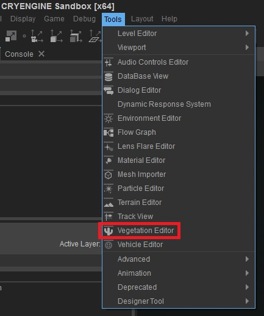
Рис.9: Выбор инструмента «Растительность».
Добавьте новую группу и назовите ее как-нибудь подходящим (начальное имя = По умолчанию1).
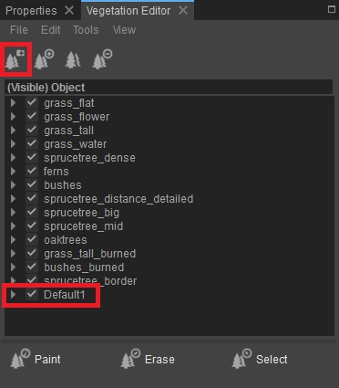
Рис.10: Добавление группы «Растительность».
Нажмите кнопку Добавить объект растительности (первая кнопка), чтобы добавить объект растительности в эту группу.
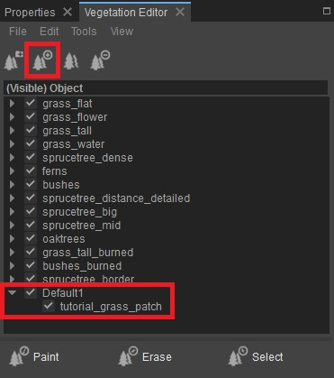
Рис11: Добавление объекта растительности в группу
В диалоговом окне обзора перейдите в папку, в которой вы сохранили ресурс, и выберите созданный нами участок травы.
<Your_Project>\Assets\Objects\tutorial\vegetation\01\grass_patch\tutorial_grass_patch
Поместите немного растительности вниз
Теперь выделите объект, который вы только что добавили в группу, чтобы выбрать его, и вы можете выполнить любую из следующих процедур:
- Включите кнопку рисования объектов, чтобы закрасить множество экземпляров вашего куста, или
- Точнее, не нажимать кнопку покраски объектов (чтобы она не была активной) и на ландшафте Shift+LMB разместить только 1 экземпляр.
Нанесите на местность траву площадью около 100–150 м. Достаточно, чтобы покрыть большую часть территории вокруг игрока и на расстоянии. Нам нужно некоторое расстояние, чтобы иметь возможность наблюдать за изменениями в объекте, когда мы изменяем некоторые свойства, такие как смешивание цветов ландшафта.
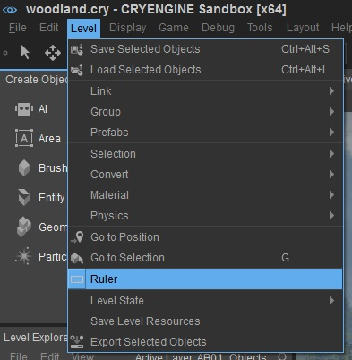
Рис12: Доступ к инструменту «Линейка»
Отрегулируйте линейку, чтобы быстро и точно определить расстояния. Просто выделите инструмент, чтобы он стал активным, затем нажмите левую кнопку мыши (LMB) в том месте, где вы хотите измерить начальную и конечную точки линейки.
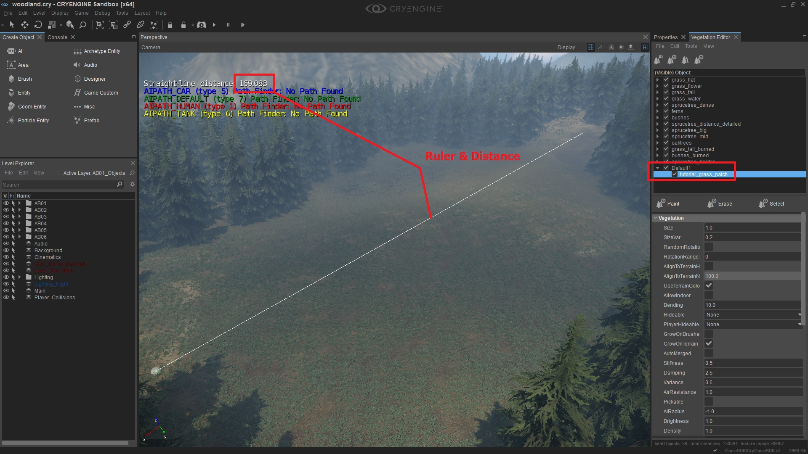
Рис.12а: Неиспользуемая область на уровне Леса. Использование инструмента линейки для определения расстояния, пройденного травой.
Измените свойства материала травы.
Теперь, когда наш объект помещен на уровень, мы можем настроить его свойства, чтобы видеть обновления по мере их изменения.
Обычная зависимость представления
В разделе Shader Params редактора материалов сначала нам нужно установить для Normal View Dependency максимальное значение (0,95). Это значение ориентирует нормали по отношению к взгляду игрока и полезно для простой геометрии (из чего построен наш актив травы, несколько плоскостей). Эта функция помогает смешать отдельные геометрические плоскости, чтобы обеспечить единообразный вид с одного и того же направления (вашей точки зрения).
Цветовая смесь ландшафта и расхождение цветов ландшафта
Эти два ползунка работают друг с другом. Если вы измените один, вам, вероятно, придется изменить другой. Эти два значения работают согласованно друг с другом, управляя силой эффекта и расстоянием до камеры, где он станет активным.
Чтобы использовать эту функцию в материале объектов, мы должны включить UseTerrainColor флаг в редакторе растительности. Выберите Трава объект и установите флажок, чтобы сделать его активным.
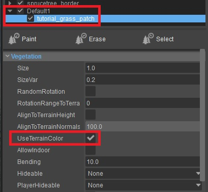
Рис. 13: Включение смешивания цветов ландшафта для этого объекта растительности.
Переместите камеру вниз на высоту игрока, чтобы лучше ориентироваться, так как именно с этой точки зрения в игре будет воспроизводиться ваша точка зрения.
Это позволяет смешать вашу растительность с окружающей средой. Если вы не хотите, чтобы этого произошло, вам придется отключить флажок в свойствах растительности.
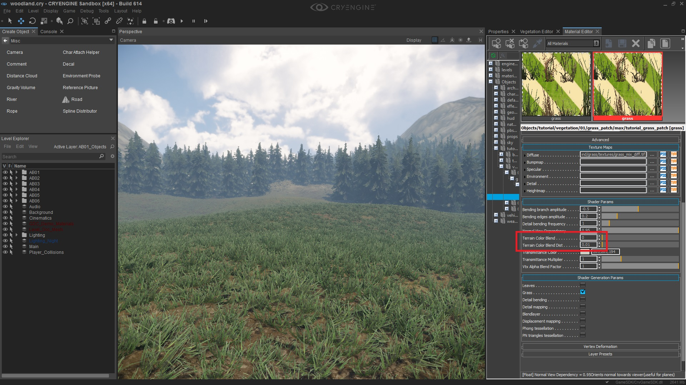 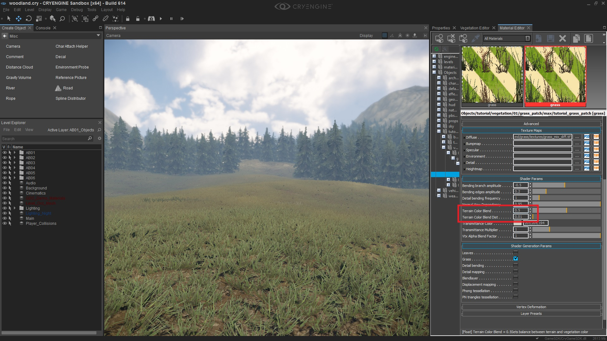 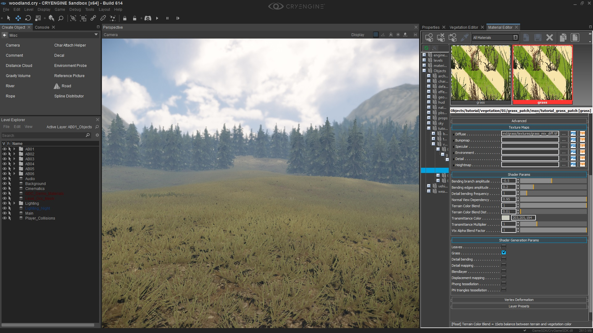
Рис.13,14,15: Та же настройка, но с разной интенсивностью смешивания: 0, 0,5 и 1.
- При силе=0 очень слабая окраска на дальнем расстоянии.
- При силе = 0,5 вы можете видеть, как цвет влияет на большую часть растительности по мере приближения к камере.
- При силе = 1 цвет местности заливает все объекты травы. Прямо перед камерой. На самом деле это не то, что вы бы установили, поскольку при этом информация о текстуре в активе травы полностью перезаписывается.
Второй слайдер, Цветовая смесь местности, расст., работает с конца Цветовая смесь ландшафта настройки, вплоть до камеры.
Итак, вы бы установили Цветовая смесь ландшафта сначала, затем вы дополнительно регулируете расстояние с помощью Цветовая смесь местности, расст. для точной настройки сочетания цветов. Опять же, установка максимального значения зальет траву цветом местности.
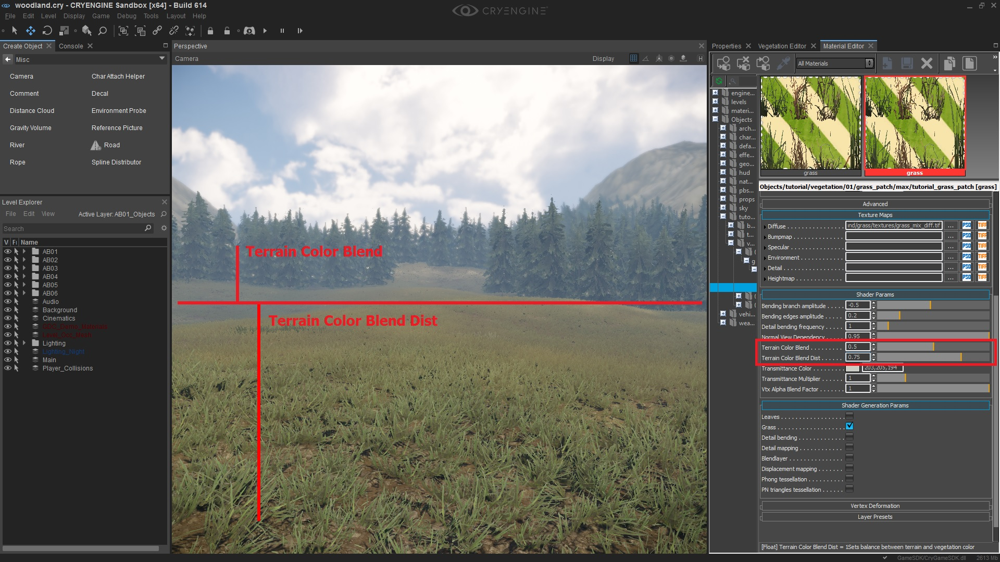
Рис. 16,17,18: Как и выше, Terrain Color Blend (0,5), но добавлен сверху с помощью Terrain Color Blend Dist со значениями 0,01, 0,5, 0,75.
пропускание
Эффект пропускания (прохождение света через поверхность) определяет толщину листвы и количество света, которое может пройти с обратной стороны.
Но мы все равно можем использовать эту функцию (без канала непрозрачности) и установить цвет для пропускания, а также силу эффекта пропускания, но это будет применено ко всему активу.
- Установите цвет пропускания на значение 203 205 194 (очень светло-зеленый).
- Оставьте множитель пропускания равным 1.
Опять же, не существует жесткого правила, которое можно было бы использовать при выборе цвета «обратной стороны» для коэффициента пропускания. Все зависит от цвета актива. Но в целом цвет должен быть ярче лицевой стороны.
Добавляем немного движения растительности
Теперь мы настроили свойства материала, пришло время закончить настройку некоторых параметров в инструменте растительности.
Сейчас трава очень static, травинки не двигаются. Мы можем применить к траве некоторый «процедурный шум», изменив Гибка слайдер. Это будет действовать как простой рисунок взмахов вперед и назад.
Есть два способа придать траве движение:
- Гибка свойство в инструменте растительности
- Вершинная деформация в материале
Гибка
Использование свойства изгиба в инструменте растительности на объекте синхронизирует его движение с глобальным вектором ветра, который вы установили на вкладке «Среда». Существуют различные способы настройки свойств изгиба активов:
- Сначала выберите силу и направление глобального ветра, которые вам нужны на вашем уровне.
- Затем в категориях растительности установите величину изгиба, которую вы хотели бы иметь на активе при этом уровне глобального ветра.
Затем, если вы измените глобальный ветер на уровне (потому что идет шторм или что-то в этом роде) при увеличении глобальной силы ветра, его эффект будет умножен за счет настройки изгиба экземпляров растительности. Таким образом, если вся растительность настроена на правильное движение при одной настройке ветра, то при изменении глобального ветра вверх и вниз все они должны увеличиваться или уменьшаться в зависимости от силы ветра.
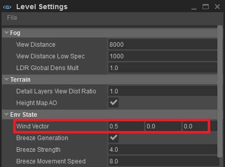
Рис. 19. Настройка глобальной силы/направления ветра на вкладке «Окружающая среда».
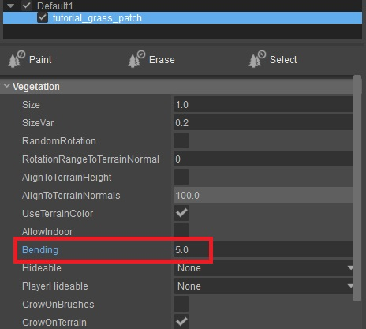
Рис. 20: Ползунок «Изгиб», устанавливаемый для каждого объекта растительности.
Вершинная деформация
В редакторе материалов на вкладке «Деформация вершин» мы также можем контролировать длину волны, амплитуду, частоту и т. д.
Это позволяет вам применить простую волновую функцию для работы с растительным активом. Этот метод применения движения обеспечивает очень последовательные повторяющиеся волны. Из-за этого трава выглядит так, как будто она движется синхронно друг с другом, и это выглядит не очень естественно. Вы можете исправить это, обеспечив мягкий эффект (очень низкие числа).
Поскольку это движение применяется через настройки материала, оно не может использовать преимущества глобального состояния ветра, которое вы устанавливаете внутри Окружающая среда панель.
Также обратите внимание, что этот материал настройки деформации вершин переопределяет атрибут изгиба в свойствах растительности. Чтобы сбросить актив, чтобы снова воспользоваться преимуществами изгиба растительности, установите деформацию вершин обратно на нет (вместо Sin Wave в этом примере).
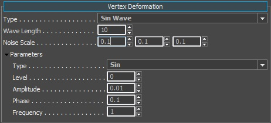
Рис. 21: Панель Vertex Deformation с активной Sin Wave.
Свойства деформации вершин довольно обширны, и вы можете использовать различные настройки для управления движением этих ресурсов. Для получения дополнительной информации о Деталь Гибка, перейдите к следующему страница.
LOD (уровень детализации)
Поскольку мы установили, что наша модель содержит некоторые уровни детализации, давайте проверим их в CRYENGINE.
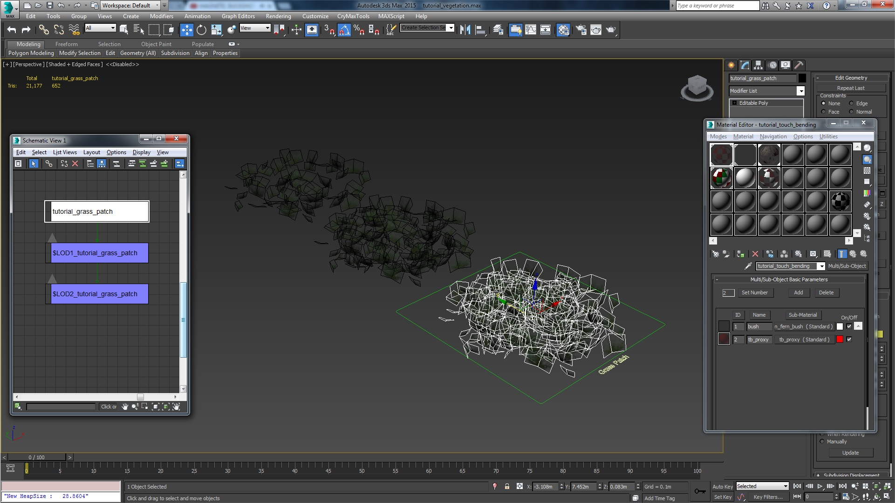
Рисунок 22: Обзор иерархии LOD в 3dsMax (удаление примерно 50% полигонов на шаг LOD).
Чтобы помочь нам отладить LOD, мы можем включить переменные консоли (CVar);
- e_debugdraw 3 (с текстом и цветами)
- e_debugdraw -3 (без текста справки, только цвета)
Мы можем использовать эту CVar для цветового кодирования ресурсов, и в зависимости от LOD, в котором находится актив, он получит другой цвет. Это очень полезно для быстрой визуализации уровней LOD. Порядок цветов для LOD следующий:
| LOD Уровень | Цвет |
|---|---|
| 0 | Красный |
| 1 | Зеленый |
| 2 | Синий |
| 3 | Бирюзовый |
| 4 | Желтый |
| 5 | Фиолетовый |
Поскольку мы добавили только 2 уровня детализации в участок травы, когда мы видим возможность включения представления отладки для проверки уровней детализации, мы должны видеть только первые 3 уровня: красный, зеленый и синий (0,1,2).
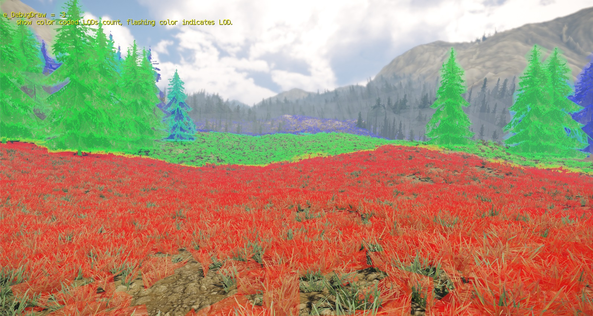
Рис. 23: e_debugdraw -3 (визуализация лодов с цветовой кодировкой)
Чтобы настроить место замены LOD, мы контролируем это с помощью настроек в редакторе растительности.
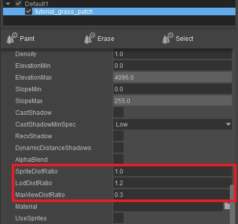
Рис. 24: Просмотр соотношения расстояния и LOD в редакторе растительности.
Чтобы получить правильное расстояние обзора и соотношение LOD, лучше всего настроить их в соответствии с предпочитаемыми вами настройками:
- Установите MaxVistDistRatio. Это будет последнее расстояние, на котором будут отображаться объекты.
- Затем настройте LodDistRatio. Это всегда рассчитывается на основе MaxViewDistRatio. Он всегда будет пытаться разместить весь диапазон уровней детализации на максимальном расстоянии обзора, прежде чем окончательно прекратит рендеринг.
MaxViewDistRatio
Диапазон значений составляет от 0 до 2,55. (не 255) Чем меньше число, тем ближе к камере растительность перестанет прорисовываться.
LodDistRatio
Это значение работает в противоположном направлении. Диапазон снова варьируется от 0 до 2,55. Но чем меньше число, тем дальше будет сохраняться расстояние LOD0. Вы могли бы сформулировать это как «задержка переключения LOD».
Заключительные замечания
После прочтения этого документа вы теперь должны знать следующие концепции и рекомендации/правила по настройке ресурсов, лежащие в основе ресурса «Участок травы»:
- Настройка иерархии в максе (цепочка LOD).
- Не добавляйте прокси физики к простому ресурсу травы (не обязательно).
- Примените правильную настройку материала в CRYENGINE, чтобы воспользоваться преимуществами параметра шейдера травы.
- Использование глобального ветра для влияния на движение активов посредством атрибута изгиба в инструменте растительности (или использование деформации вершин материалов для того же эффекта, но без привязки к глобальному ветру).
- Правильное использование инструмента растительности для настройки актива.
- Настраивайте и отлаживайте коэффициенты и настройки LOD.
- Использование участков травы означает, что вы не могу используйте технологию MergedMesh. Таким образом, каждый объект травы, который вы размещаете, имеет свой собственный набор вызовов отрисовки (визуализируйте с помощью r_stats=6).
- Не включайте технологию MergedMesh на участках с травой. Настройка геометрической сетки внутри актива слишком сложна для обработки системой (технология MergedMesh требует простых отдельных плоскостей травы, а не участков).